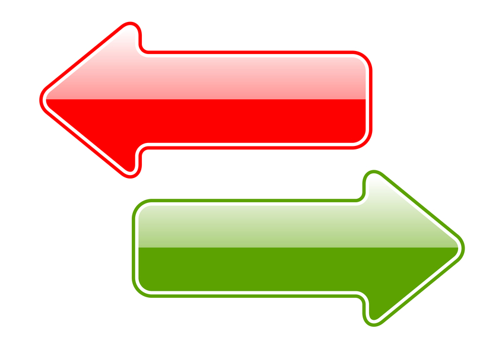

A SIKERTELEN EMBER

A SIKERES EMBER
- kis lépésekkel halad
- felelősséget érez
- célokat tűz ki
- kockáztat
- szerény
- szereti a változást
- ötletekről beszél
- megbocsát
- hiszi és megcsinálja
- keresi a kihívást
- dicsér
- cselekszik
- folyamatosan tanul
- mások sikerének is örül
- tanul a hibáiból
- megosztja az információt
- örömöt áraszt
- minden nap olvas
- hálás
- elismeri mások győzelmét
- lenni akar valaki